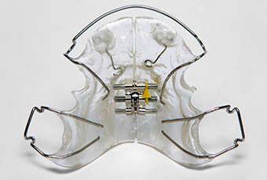
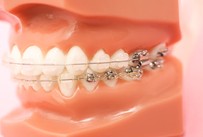
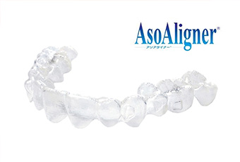

- ホーム
- 矯正歯科
天王寺まつい総合歯科の矯正歯科治療
子どもの矯正
子どもの矯正を始める意義
お子さまの歯並びや嚙み合わせが気になったら、まずは当院までご相談ください。矯正治療は、大人になってからでも受けることはできますが、子どもの時期から始めた方が、お子さまの負担を減らすことができます。
なぜなら、歯や顎の骨が発育途上にあるからです。発育に合わせて治療を施すことで、無理なく歯並びを整えることが可能です。矯正治療上の抜歯を行う必要もなくなり、治療後の後戻りも抑えられます。
子どもの矯正装置

当院では、床矯正（しょうきょうせい）によって、子どもの矯正治療を行っております。床矯正に用いられる装置は、金属製のワイヤーとプラスチックから構成されており、ご自身で取り外しできます。
ワイヤー矯正に用いられる固定式の一般的な矯正装置（マルチブラケット装置）のように、歯をひとつひとつ移動させるのではなく、顎の骨の拡大が主な目的となります。顎の骨の成長を促し、歯が並ぶスペースを確保します。その結果、将来的な矯正治療上の抜歯が不要になったり、治療後の後戻りが抑制されたりします。
大人の矯正
ワイヤーを使用した部分矯正～全顎矯正
当院では、ワイヤーを使用した部分矯正を主に行っております。前歯が少し傾いていたり、犬歯が外側に飛び出していたりするような症例に対して、部分的な矯正処置を施します。使用するのは、矯正用のワイヤーです。

歯列全体を矯正するわけではないので治療期間が短く、患者さまの身体的、経済的負担も抑えることができます。ただ、歯並びの異常が大きい場合は、部分矯正が適応できないことがありますので、気になる方はまずご相談ください。
歯列全体の矯正や顎骨自体の矯正（外科矯正）等が必要な難症例であっても、当院と連携する外科矯正の資格を持つトップレベルの矯正医をご紹介させて頂く事もできます。
マウスピース型矯正装置「アソアライナー」

アソアライナーとは、マウスピース型の矯正装置です。矯正と聞くと、金属製のワイヤーやブランケットをイメージして、見た目が気になる方も多いでしょう。しかし、アソアライナーならそのような心配はいりません。なぜなら、アソアライナーが透明なマウスピースだからです。接客や営業などの仕事などでも、人目を気にすることなく自信を持って人前に出られます。また、取り外しが自由にできるため、日常生活への支障がありません。
アソアライナーの進め方
アソアライナーを進めるためには、マウスピースの装着と定期的な通院が必要です。通院中は、コンピューターで理想的な歯並びをシミュレーションし、その都度マウスピースを作り替え矯正歯科を進めていきます。ただし、「上下の顎の大きさが違う」「複雑な歯並びをしている」などアソアライナーが難しいケースもあります。